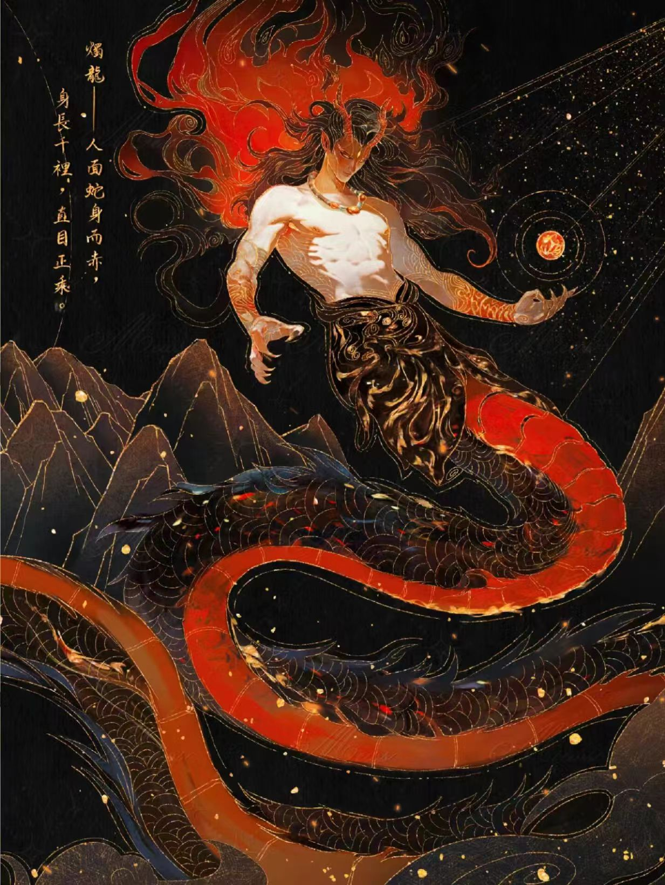
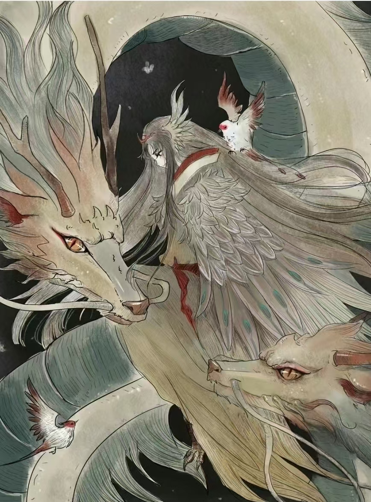
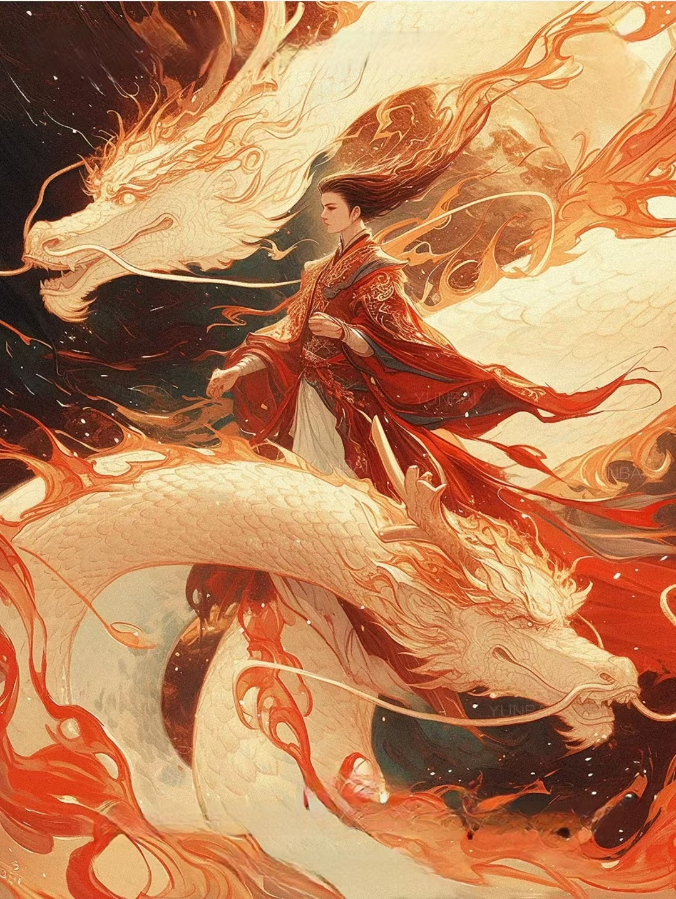
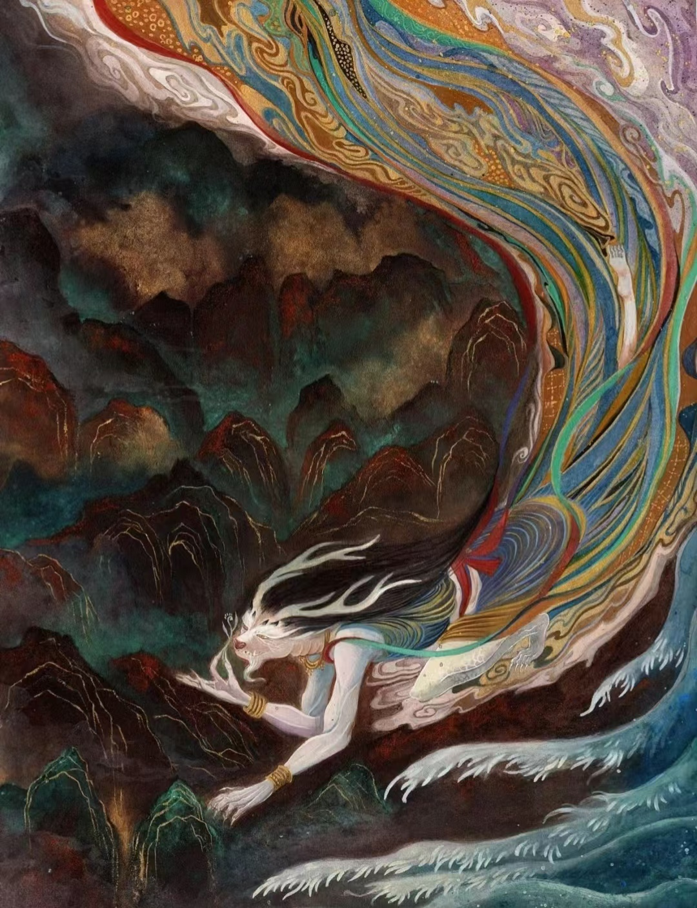
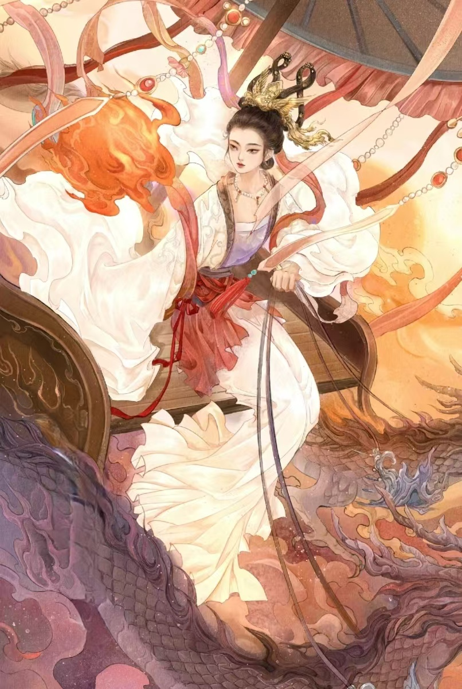
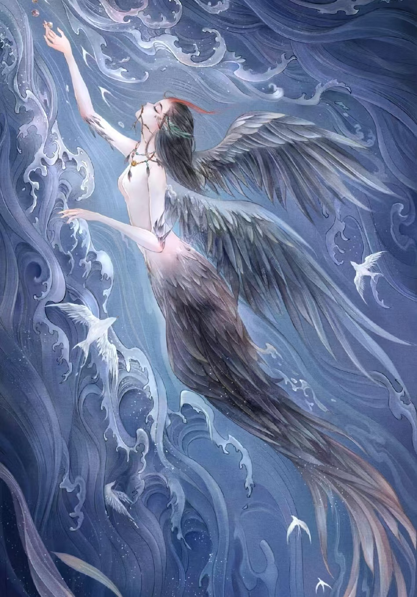

人神共存的世界
“你相信吗？”
山经中的人神
南山经：龙首鸟身神、龙身人面神等
西山经：黄帝、陆吾、长乘、帝江、白帝少昊等
北山经：炎帝、女娃、人面蛇身神等
东山经：人身龙首神、兽身人面山神等
中山经：武罗、骄虫、耕父、娥皇、大禹等
海经中的人神
海外南经：十六神人、黄帝、后羿、尧、祝融
海外西经：启、刑天、黄帝、女祭、女戚、女丑、薄收
海外北经：烛阴、共工、相柳、大禹、夸父、颛项、禺强
海外东经：奢比尸、天吴、竖亥、句芒
海内南经：舜、孟涂
海内西经：贰负、危、后稷
海内北经：兽、丹朱、舜夷、冰、王子夜、登比氏、宵明、烛光
海内东经：雷神、舜、颛琐
大荒东经：梨尸、晏龙、司幽、思士、思女、帝鸿、黑齿等
大荒南经：少昊、倍伐、无淫、蚩尤、伯服、羲和、帝俊等
大荒西经：大禹、共工、女娲、石夷、太子长琴、祝融等
大荒北经：颛琐、帝俊、应龙、风伯、雨师、魃、烛九阴等
海内经：黄帝、雷祖、昌意、韩流、后稷、大皋、乘厘等
万物有灵
“混沌初开，乾坤始奠”
钟山之神|烛龙栖寒门，光曜犹旦开
"钟山之神，名曰烛阴，视为昼，瞑为夜，吹为冬，呼为夏，不饮，不食，不息，息为风。
身长千里。在无管之东。其为物，人面，蛇身，赤色，居钟山下。"

陆吾|肩吾得一，以处昆仑
"西南四百里，曰昆仑之丘，是实惟帝之下都，神陆吾司之。其神状虎身而九尾，人面而虎爪；是神也，司天之九部及帝之囿时。"
东方句芒|乘龙踏云，携春之风
"东方句芒，鸟身人面，乘两龙。"
春日之神，双足轻踏云霭，神游仙境。两条巨龙环绕其左右，长须飞扬，鳞甲闪耀着灿烂的光芒。象征着生命的复苏和大地的繁荣。

女娲|古之神圣女，化万物者也
“女娲，古神女而帝者，人面蛇身，一日中七十变。”华夏民族人文先始，福佑社稷之正神。
生性慈爱宽大，有补天之功德。
南方祝融|传火人间，光照四海
“南祝融，兽身人面，乘两龙。”
祝融，中国上古神话谱系中的火神，夏日之神。在历史记载中象征着真实的族群，火，带领先民走出荒蛮，走向文明，生生不息。


雨师计蒙|司雨之神，呼风唤雨
人生而龙首，出入必有飘风暴雨。"又东百三十里日光山，其上多碧，其下多木，神计蒙处之，
其状人身而龙首，恒游于漳渊，出入必有飘风暴雨。"
太阳神羲和|旭日东升，煌煌泱泱
太阳之母，人类光明的缔造者，太阳崇拜中至高无上的女神。"东南海之外，甘水之间，有羲和之国。
有女子名曰羲和，方日浴于甘渊。羲和者，帝俊之妻，生十日。"


精卫|长将一寸身，衔木到终古
"有鸟焉，其状如乌，文首，白喙，赤足，名曰："精卫"，其鸣自談。
是炎帝之少女，名曰女娃。女娃游于东海，溺而不返，故为精卫，常衔西山之木石，以埋于东海。"
.jpg)
.jpg)
.jpg)
.jpg)
.jpg)